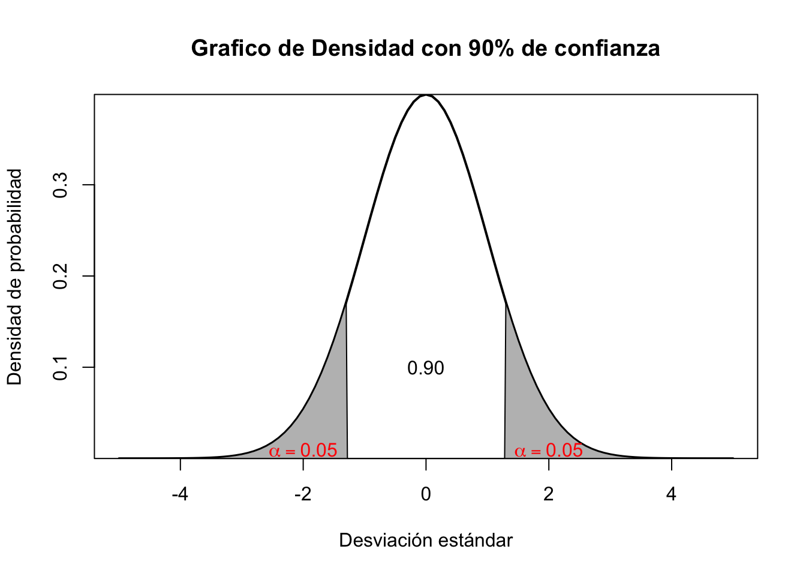
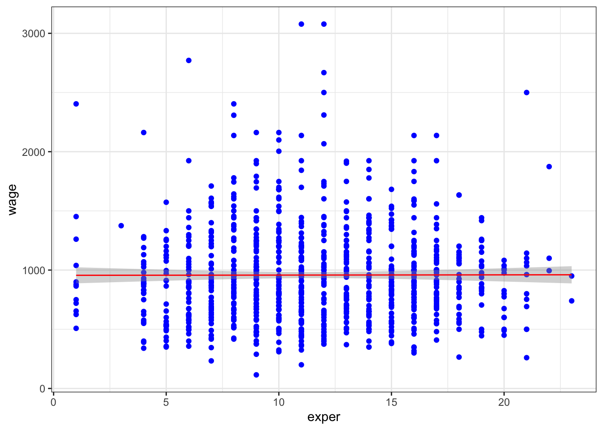
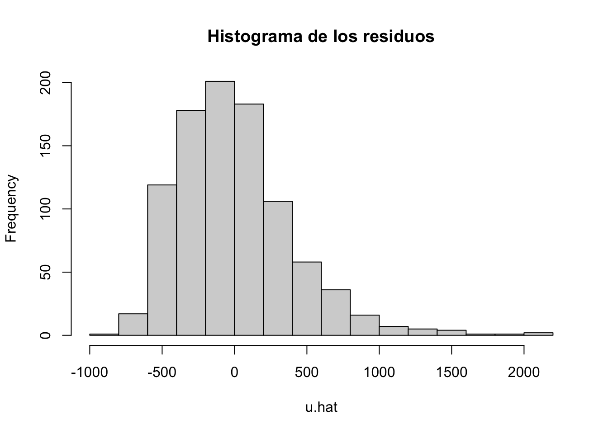

# Buscar en las tabla de la normal en niveles de significancia
qnorm(0.90)[1] 1.281552
Los modelos de Mínimos Cuadrados Ordinarios (MCO) son fundamentales en la econometría y estadística debido a su simplicidad y robustez. Estos modelos estiman la relación lineal entre variables, minimizando la suma de los errores cuadráticos, lo que permite obtener estimaciones insesgadas y eficientes bajo ciertas condiciones.
En esta guía intentaremos trabajar la parte inferencial de la estadística para la construcción de intervalos de confianza, indispensables para las pruebas de hipótesis. Desde luego a partir de aquí se empieza la parte vital de lo que es la inferencia estadística. Luego de esa parte se comienza a dar uso al modelo de regresión simple, que involucra la estimación causal de la variable X (explicativa) con la variable Y (dependiente) y desde luego obtener los estimadores respectivos.
La validez de las estimaciones se dan a partir de las herramientas estadísticas que nos permiten determinar si algo es verdadero sobre todo para una muestra. Las pruebas de hipótesis surgen para eso.
Tome por ejemplo que quisiéramos ver que la media (promedio) de la nota de los estudiantes de economía es de 3.5. Plantear esto en términos de hipótesis requerirá los siguientes elementos: Primero una parte nula - considérelo como el punto de partida- y que de ahora en adelante notaremos como \(H_0\) y una parte alternativa que surge de lo que crea que va a suceder y que de cierta forma o manera le conviene a un investigador encontrar y la conoceremos de ahora en adelante como \(H_a\).
Regresando a la parte del ejemplo de la nota, podriamos plantear eso como:
\[\begin{aligned} H_0: &\text{Estudiantes con promedio de 3.5} \\ H_a: &\text{Estudiantes con promedio diferente de 3.5} \end{aligned}\]
Lo anterior puede re-expresarse de forma simplificada y en términos de inferencia como:
\[\begin{aligned} H_0: & \bar{x} = 3.5 \\ H_a: & \bar{x} \neq 3.5 \end{aligned}\]
La parte de \(\bar{x}\) es la media o promedio de la variable aleatoria y queremos saber si es igual a 3.5 o por el contrario, es distinta a ese valor.
Probar hipótesis hace que se requieran algunos elementos como el tipo de distribución, los valores críticos y por ende los intervalos de confianza.
De la existencia de los valores críticos podremos tener nuestras zonas de rechazo de hipótesis. Con estos podemos con suficiente evidencia probar una pregunta de investigación. Para establecerlos, debemos dar por sentada la significancia o nivel de la prueba, a mayor nivel la zona “critica” será aún mas exigente para testear algo -cosa que siempre debemos desear1-. En la medida que su confianza exija un mayor nivel esta asumiendo pruebas con una población mas grande. Los niveles van en el 90% muestras pequeñas y menor es la exigencia (zona critica muy “relajada”), mientras que en un 95% es mucho mas completa y exigente, ya para el caso superior se debe tomar el nivel de 99%. En R es fácil obtenerlo a partir del comando qnorm()
# Buscar en las tabla de la normal en niveles de significancia
qnorm(0.90)[1] 1.281552Recuerde que esto es como tener un espacio límite de valores (en la guía anterior ya se había hecho una explicación al respecto de esto)

Si quiere ser un poco mas estricto puede usar niveles de confianza superiores que reducirán de forma consistente el area de rechazo de la prueba de hipotesis. Mire la siguiente tabla:
| Funciones | Valores críticos | Ponderación |
|---|---|---|
| qnorm(0.95) | 1.64 | Alta |
| qnorm(0.975) | 1.96 | Muy Alta |
| qnorm(0.99) | 2.33 | Estricta |
Si nota, la zona de rechazo se hace mas pequeña debido al nivel de confianza. Es de esperar que usted siempre este evaluando al máximo nivel posible.
En lo consecuente para la tabla de distribuciones que requieran a la table T-Student, la opción a usar es qt(p,n) donde \(p\) es el nivel de confianza y \(n\) viene a ser el tamaño de la muestra o número de observaciones:
qt(0.95, 30)[1] 1.697261Esos límites calculados o hallados serán denominados como nuestros estadísticos críticos, con el objeto de rechazar nuestras hipótesis nulas, el T-Calculado debe ser mayor en su valor absoluto a estos valores críticos. A diferencia de qnorm debe añadirse \((n)\) que es el tamaño de la muestra y no el de la población.
Entendiendo mejor los valores críticos, podemos entonces construir intervalos de confianza que permitirán inferir donde se ubica o esta el promedio de una variable.
\[\left[ \bar{y} - \text{Valor crítico} \frac{\alpha}{2} \times s.e(\bar{y}) \leq \bar{y} \leq \bar{y} + \text{Valor crítico} \frac{\alpha}{2} \times s.e(\bar{y}) \right]\]
La clave es el valor crítico, quien viene a ser nuestro límite de zona, debe usted estar en capacidad de mirar que las pruebas estadísticas así lo requieren. Miremos que el valor crítico es el que nos da el nivel del 95% con muestras grandes, entonces usemos el que nos da el qnorm(95)
\[\left[ \bar{y} - 1.65 \times s.e(\bar{y}) \leq \bar{y} \leq \bar{y} + 1.65 \times s.e(\bar{y}) \right]\] El resto de valores son la media (promedio) de la variable a evaluar y su respectiva desviación estándar (s.e).
Aplicación
Tomemos por ejemplo el numero de firmas o empresas que se capacitaron laboralmente dentro un periodo de tiempo. Queremos mostrar si hay o existe alguna diferencia entre el grupo que recibe la capacitación o entrenamiento y de otro que no lo hizo2. Diremos que los tratados hacen referencia a los que se trataron o fueron seleccionados para el proceso de entrenamiento/capacitación y los controles como aquellos que no lo fueron o no tomaron esa capacitación.
Primero vamos a definir un estadístico de prueba o que mida el cambio. Esto significa que vamos a mirar la diferencia de los promedios de aquellos individuos/firmas que tuvieron la capacitación versus aquellos que no la tuvieron. Para eso vamos a utilizar el estadístico de \(\tau_i\) que significa:
\[\tau_i= \text{Promedio de los Tratados}-\text{Promedio de los Controles}\] Esto es como mirar lo que se conoce como Diferencia de medias(promedios)
# Datos de ejemplo
tratados<-c(10,1,6,.45,1.25,1.3,1.06,3,8.18,1.67,.98,1,.45,5.03,8,9,18,.28,
7,3.97)
controles<-c(3,1,5,.5,1.54,1.5,.8,2,.67,1.17,.51,.5,.61,6.7,4,7,19,.2,5,3.83)
# Creamos nuestro estadístico de prueba
Cambio <- tratados - controles
# Ingredientes para el intervalo y su formula: usamos parentesis para resultados
avgCh<- mean(Cambio)
n <- length(Cambio)
sdCh <- sd(Cambio)
se <- sdCh/sqrt(n)
c <- qt(.975, n-1)
# Intervalo de confianza al 97.5%:
c(avgCh - c*se, avgCh + c*se)[1] 0.03096631 2.27803369Esto no es mas que la aplicación de la formula que se explicó anteriormente para el intervalo de confianza de \((\bar{y})\) solo que estamos usando en esta ocasión la diferencia de promedios o \((\tau)\):
\[\left[0.030\leq \tau_i\leq 2.28\right]\]
Que es el intervalo de nuestra prueba y mirando que nuestro estadístico o media “cae” dentro del intervalo. Podríamos estar pensando en rechazar posiblemente nuestra hipotesis nula o \(H_0\). Sin embargo, interpretemos todo y lo anterior hacerlo en un solo paso o forma con el comando t.test:
# Ejemplo de dos colas: Intervalo de confianza
t.test(Cambio)
One Sample t-test
data: Cambio
t = 2.1507, df = 19, p-value = 0.04458
alternative hypothesis: true mean is not equal to 0
95 percent confidence interval:
0.03096631 2.27803369
sample estimates:
mean of x
1.1545 Para el caso, encontramos que si existen diferencias entre un grupo y el otro con respecto a la capacitación por lo menos con 95% de significancia. Lo que nos indica que la capacitación si ha tenido impacto y que deberían aplicarse a futuro otras capacitaciones. El t=2.15 es el calculado y si vemos, es mayor al t-critico t=1.69 que es el valor que sale en la tabla de la t-student. La parte de df viene a ser la parte de los grados de libertad de los datos. Note que el p-value es la probabilidad de caer en la zona de no rechazo y por ende es el argumento que nos lleva a decir la razón de rechazar \(H_0\).
Ademas de lo anterior, también podemos hacer pruebas de una cola respectivamente. Suponga que por un momento se dice que la capacitación ha tenido efectos negativos en el rendimiento de un grupo con respecto al otro.
\[\begin{aligned} H_0: & \tau_i = 0 \\ H_a: & \tau_i \leq 0 \end{aligned}\]
# Cuando es solo evaluar la parte izquierda
t.test(Cambio, alternative="less")
One Sample t-test
data: Cambio
t = 2.1507, df = 19, p-value = 0.9777
alternative hypothesis: true mean is less than 0
95 percent confidence interval:
-Inf 2.082697
sample estimates:
mean of x
1.1545 Teniendo como resultado no rechazar la hipotesis nula. En este caso el rendimiento no ha justificado que los trabajadores con el curso hayan salido peor de lo que iniciaron.
Para mirar, sea el caso que el grupo capacitado tenga un mejor rendimiento que otro desde (0) como escala o criterio, podemos hacer lo siguiente:
\[\begin{aligned} H_0: & \tau_i = 0 \\ H_a: & \tau_i \geq 0 \end{aligned}\]
# Cuando solo quiere evaluar los mayores o parte derecha
t.test(Cambio, alternative="greater")
One Sample t-test
data: Cambio
t = 2.1507, df = 19, p-value = 0.02229
alternative hypothesis: true mean is greater than 0
95 percent confidence interval:
0.2263028 Inf
sample estimates:
mean of x
1.1545 En esta ocasión si podemos rechazar la hipótesis nula de que no existe diferencias entre grupo de capacitados y los que no lo hicieron. Desde luego el programa de capacitación mejora significativamente el rendimiento de un grupo versus el otro.
La parte que usó less es aquello que miden \(H_1: \tau \leq \tau_{0}\) y la parte correspondiente a greater es \(H_1: \tau \geq \tau_{0}\).
Los modelos de regresión son una herramienta muy fuerte para lograr cuantificar la magnitud y relación que tiene una variable \(X\) con respecto a una variable \(Y\) comúnmente conocida como la variable objetivo o variable dependiente, es también inherente encontrar relaciones de causa-efecto si se cumplen varios supuestos.
Un modelo de regresión muestral puede ser expresado como:
\[\widehat{y}= \widehat{\beta}_{0}+\widehat{\beta}_{1}x_{1}+ \mu_{i}\]
Donde:
Y cuyo análogos estadísticos para obtener cada uno de los parámetros es: \[\begin{aligned} \widehat{\beta}_{0}=& \bar{y}-\widehat{\beta}_{1}\bar{x} \\ \widehat{\beta}_{1}=& \frac{Cov(x, y)}{Var (x)} \end{aligned}\]
Recuerde que la \(cov(x,y) = \sum_i (x_i - \overline{x})(y_i - \overline{y})\) y la varianza o \(Var(x)=\sum_i (x_i - \overline{x})^2\)
Para obtener nuestra ecuación del modelo, solo debemos hallar los estadísticos del promedio de la dependiente \(\bar{y}, \text{el promedio de}\; \bar{x}, Cov(x,y) \;y\; Var(x)\).
library(dplyr) #Paquete para manejo de variables
library(readxl) #Para cargar datos de excel (xls)
datos <-read_excel("Salarios.xlsx")
attach(datos) # Frame de la base de forma resumida
# Saber el nombre de las columnas (variables) en los datos
names(datos) [1] "wage" "hours" "IQ" "KWW" "educ" "exper" "tenure"
[8] "age" "married" "black" "south" "urban" "sibs" "brthord"
[15] "meduc" "feduc" "Jh" De esta manera sabemos que variables están dentro de la base de datos. A continuación iremos resolviendo cada uno de los pasos del modelo.
Para tener nuestro modelo, entonces debemos implementar un par de métricas que nos iran dando los ingredientes que requerimos para el cálculo de la mejor linea de ajuste.
Para este solo podemos hacer lo siguiente:
cov(exper, wage) [1] 3.873389Esta no tiene ninguna interpretación pero por lo menos su signo, si nos va dando dirección de la relación que tiene la variable objetivo del salario con la experiencia del individuo.
La varianza de la variable explicativa nos permite entonces encontrar el peso o estimador adecuado.
var(exper)[1] 19.13701Los promedios de cada una de las variables que estaremos usando en nuestro modelo, nos permite entonces tener la característica de cada una en este caso.
mean(wage)[1] 957.9455mean(exper)[1] 11.56364Recuerde que al final de todo, lo que se requiere es hallar las ‘incognitas’, que en este caso no es mas que cada uno de los estimadores del modelo. Para \(\hat{\beta}_1\) entonces es
( b1hat <- cov(exper, wage )/var(exper) ) # usamos doble paréntesis para resultado[1] 0.2024031Luego entonces, nos corresponde hallar el parámetro autonomo o \(\hat{\beta}_0\), en este caso aplicamos:
( b0hat <- mean(wage) - b1hat*mean(exper) )[1] 955.6049# "detach" quitar el atajo del data frame
detach(datos)Que nos arroja una ecuación de modelo denotada como: \[\widehat{y}= 955.60+0.202\;\text{Experiencia}+ \mu_{i}\]
Es imprescindible que vaya en el modelo el residuo \(\mu_{i}\), esto hace “noble” la estimación y permite establecer que no solo la -experiencia impacta o tiene efecto en el salario de una persona existen muchas otras variables que también tienen efectos en la dependiente, pero que por el momento estamos ignorando o no teniendo en cuenta-. La interpretación de los datos es vital en esta parte. El modelo nos esta indicando que las personas sin experiencia se están ganando en promedio un salario de $955.60. Si queremos conocer a partir de la información que nos están brindando cuanto gana en promedio una persona que tiene 5 años de experiencia, entonces podemos variar (reemplazar) la ecuación y tener:
\[956.61= 955.60+0.202\times 5\]
Note que para este caso una persona que tenga 5 años de experiencia se gana alrededor de $956.61. Tenemos entonces un modelo predictivo de los salarios esperados dada la información adquirida.
#Para graficar un modelo de regresión simple
library(ggplot2)
theme_set(theme_bw())
p <- ggplot(data = datos, aes(y = wage, x = exper))
q=p+ylab("Salario (En dolares)")+xlab("Años de experiencia")
grafico=p+geom_point(col = 'blue')+geom_smooth(method = 'lm', col = 'red', size = 0.5)
grafico
R es un software multifuncional, puede obtener rapidamente los coeficientes de nuestro modelo de forma inmediata, sin perder la esencia de lo que se intenta calcular, esto es:
# Modelo de forma resumida
Salario<-datos$wage
Experiencia<- datos$exper
#Objeto del modelo
modelo.1 <- lm(Salario ~ Experiencia)
#Resultados del modelo
summary(modelo.1)
Call:
lm(formula = Salario ~ Experiencia)
Residuals:
Min 1Q Median 3Q Max
-842.43 -289.13 -52.84 201.86 2120.17
Coefficients:
Estimate Std. Error t value Pr(>|t|)
(Intercept) 955.6049 37.4111 25.543 <2e-16 ***
Experiencia 0.2024 3.0261 0.067 0.947
---
Signif. codes: 0 '***' 0.001 '**' 0.01 '*' 0.05 '.' 0.1 ' ' 1
Residual standard error: 404.6 on 933 degrees of freedom
Multiple R-squared: 4.795e-06, Adjusted R-squared: -0.001067
F-statistic: 0.004474 on 1 and 933 DF, p-value: 0.9467Note que los resultados son similares a los obtenidos de forma manual. En el summary o resumen no solo obtenemos nuestros parámetros objetivos sino también sus errores estándar para las respectivas pruebas de hipótesis y sus P-values a parte de otros indicadores que iremos explorando mas adelante como el coeficiente de determinación o R-Cuadrado.
De acuerdo al resultado anterior podemos probar en confianza que la variable Experiencia no explica en los niveles de confianza del 90%, 95% y 99% respectivamente el salario de las personas, es de esperar, que por un año adicional de experiencia que un individuo tenga su salario se incremente en tan US$0.20. Observe que el intercepto tiene un valor de US$955.60 que seria el promedio que se gana una persona de salario cuando no se tiene en cuenta los años de experiencia de esa persona.
Existen múltiples formas de mostrar resultados de los modelos lineales y no lineales en econometría, uno de ellos es huxtable y el otro, como table de kable. Cualquiera que use, es muy bueno para darle mas formato a las salidas de los modelos. Un par de ejemplo son:
# Crear tabla con huxreg
md1 <- lm(Salario ~ Experiencia)
md1result <- huxreg("Tabla #1" = md1)
# Mostrar tabla
md1result| Tabla #1 | |
|---|---|
| (Intercept) | 955.605 *** |
| (37.411) | |
| Experiencia | 0.202 |
| (3.026) | |
| N | 935 |
| R2 | 0.000 |
| logLik | -6938.363 |
| AIC | 13882.725 |
| *** p < 0.001; ** p < 0.01; * p < 0.05. | |
Que nos brinda un formato mucho mejor que la salida tradicional que nos da R por “default”. Por otro lado, tambien se puede hacer con el paquete knitr o formato kable.
md1<-lm(Salario ~ Experiencia) %>%
tidy() %>%
kable(
caption = "Modelo de regresión simple",
col.names = c("Variables", "Estimador", "SE", "t", "p"),
digits = c(0, 2, 3, 2, 3)
)
md1| Variables | Estimador | SE | t | p |
|---|---|---|---|---|
| (Intercept) | 955.6 | 37.411 | 25.54 | 0.000 |
| Experiencia | 0.2 | 3.026 | 0.07 | 0.947 |
La prueba de hipótesis para el parámetro de la experiencia concerniente al \(\beta_{1}\), en este caso es:
\[\begin{aligned} H_{0}: \beta_{1}=&\;0\\ H_{a}: \beta_{1}\neq&\;0 \end{aligned}\]
Mire que lo que se intenta probar es que lo que estamos hallando no sea cero, por el contrario, sea el verdadero valor de la estimación y se pueda decir a ciencia cierta que el impacto (efecto) promedio que tiene la experiencia sobre el Salario sea el requerido.
qt(0.95, 935) #Obtener el estadístico critico para el parámetro[1] 1.646485El estadístico o t-calculado de nuestro modelo para la variable experiencia es de 0.067 \(<\) 1.646, el cual, es menor al valor critico del nivel de significancia de 95%, por tanto, hay suficiente evidencia estadística para no rechazar la hipótesis nula de que este valor sea de cero o no significativo. Obtener el estadístico simplemente sale de la división del parámetro beta entre su error estándar. Observe que \(\beta\) poblacional toma siempre el valor de cero (se desconoce).
Las claves para rechazar la hipótesis nula es que siempre:
\[\text{Valor calculado}> \color{#eb173b}{\text{Valor crítico}}\] El valor crítico es tomado de la tabla (t-student). Lo que significa en términos de probabilidad (de caer en la zona de NO RECHAZO):
\[0.000< \color{#eb173b}{0.05}\]
La probabilidad siempre debe ser cero (0) de caer en esa zona. Se hace uso del 0.05 ya que es el nivel de error de probabilidad o (1-p) en confianza.
\[t-calculado: \frac{\widehat{\beta_{i}}-\beta}{S.e(\widehat{\beta}_{i})}\]
Los modelos no solo se estiman para encontrar relaciones entre variables, sino también para probar teorías que han sido expuestas por otros autores anteriormente. Es por esto, que en la medida que se pueda, “testeamos” nuestro modelo y lo hacemos mas “fuerte” para dar evidencia empírica que respalde que se esta haciendo un buen experimento. Los primeros supuestos del modelo de mínimos cuadrados ordinarios tienen que ver con la media, varianza y distribución del residuo \(\mu_{i}\) de nuestro modelo - recuerde que este parámetro recoge todas las variables que afectan a \(Y\) pero que no controlamos, sin embargo, queremos que su incidencia sea la mas pequeña posible -.
# Para obtener valores de predicción dato a dato
# y obtener los residuos (u.hat)
b.hat <- coef(modelo.1)
sal.hat <- fitted(modelo.1)
u.hat <- resid(modelo.1)
# Valores que se pueden añadir a la tabla y mostrar 10 valores
cbind(Salario, Experiencia, sal.hat, u.hat)[1:10,] Salario Experiencia sal.hat u.hat
1 769 11 957.8314 -188.83137
2 808 11 957.8314 -149.83137
3 825 11 957.8314 -132.83137
4 650 13 958.2362 -308.23618
5 562 14 958.4386 -396.43858
6 1400 14 958.4386 441.56142
7 600 13 958.2362 -358.23618
8 1081 8 957.2242 123.77584
9 1154 13 958.2362 195.76382
10 1000 16 958.8434 41.15661# Confirmar propiedad (1) de MCO:
mean(u.hat)[1] 5.936642e-14# Confirmar propiedad (2) de MCO:
cor(datos$exper, u.hat)[1] 1.262167e-16# Confirmar propiedad (3) de MCO :
mean(datos$wage)[1] 957.9455b.hat[1] + b.hat[2] * mean(datos$exper)(Intercept)
957.9455 La prueba de hipótesis de la distribución normal de los residuos puede escribirse plantearse así:
\[\begin{aligned} H_{0}:&\; \text{Se distribuye,}\; \mu \sim N \left (0, \sigma^2 \right )\\ H_{a}:& \; \text{No se distribuye,}\; \mu \sim N \left (0, \sigma^2 \right ) \end{aligned}\]
Miremos una gráfica de los residuos del modelo anterior:
#Normalidad de los residuos (importante)
hist(u.hat, main = "Histograma de los residuos")
Al parecer los residuos de nuestro modelo no presentan un comportamiento adecuado o similar a la campana de Gauss, mas bien tiene algo de sesgo positivo y podriamos pensar que no sigue una distribución normal .
La formula para obtener el estadístico de Jarque- Bera es:
\[JB=\left [ \frac{s^2}{6} \times \frac{(k-3)^2}{24} \right ]\sim \chi^2\] Donde \(s\) es la asimetría, \(k\) es la curtosis y se distribuye chi-cuadrado. De la prueba podemos hacerla con el paquete moments y de ahi mirar si los residuos sigan una distribución normal.
library(moments) # Paquete estadistico
jarque.test(u.hat)
Jarque-Bera Normality Test
data: u.hat
JB = 507.99, p-value < 2.2e-16
alternative hypothesis: greaterEl resultado anterior nos muestra lo que sospechábamos. El estadistico permite rechazar la hipótesis de normalidad ya que este \(507.99> \; \text{Chí-critico}\) y el p valor es casi cero, por ende no es normal.
De las propiedades mas importantes, destacamos que nuestro modelo las satisface en su gran mayoría. La normalidad de los residuos es importante tenerla, ya que nos permite decir si los \(\beta `s\) son consistentes y eficientes, sin embargo, podemos asumir la insesgadez y linealidad de estos parámetros encontrados.
Imaginese que usted siempre quiere competir y comparse con los mejores. Uno siempre desea para mirar con quien ser mas competivo(a) y por ende el nivel debe ser aun mas alto o mas estricto.↩︎
Personas, instituciones o firmas que tomamos como controles de la prueba y que no fueron seleccionada(o)s para aprender/capacitarse/entrenarse. Recuerde que aprender cierta técnica sugiere que un grupo sea mas productivo o mejor que aquellos que no hayan realizado el curso/capacitación/entrenamiento.↩︎